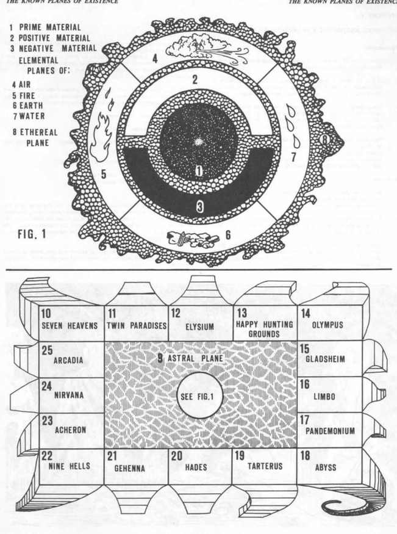

附录 IV：已知位面 · Appendix IV: The Known Planes of Existence

ADVANCED DUNGEONS & DRAGONS 的多元宇宙中存在无数平行宇宙与存在位面。所有这些“世界”并存，但它们究竟有多么真实，完全取决于战役裁判如何构建。本附录的图表与说明只展示与常态世界相连的位面；平行宇宙未列入其中，其是否真实存在也可以由裁判决定。
本节内容
上一节：附录 III：角色阵营图 · Appendix III: Character Alignment Graph
下一节：内层位面（1–8） · The Inner Planes